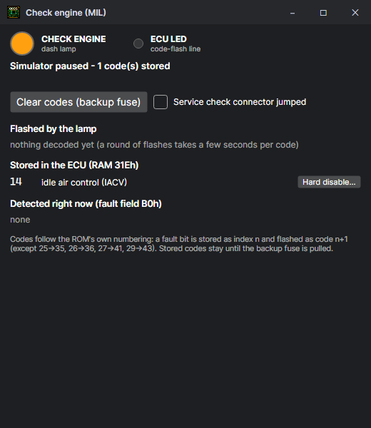

The workbench
Simulator mode: the ROM's source in the middle, the simulated chip and engine on the left, the CPU on the right.

The toolbar
| Button | Does |
|---|---|
| File | New ROM, Open, Recent, Save, Save as, projects, Bin tool, Compare, Tuner mode, Settings. |
| Build Ctrl+B | Assemble the source and load it. The button is lit (●) only when the source on screen would build to different bytes from what is loaded: an edit to a comment leaves it dark. |
| ⚡ Patch live Ctrl+Shift+B | Assemble and put only the bytes that changed into the running ROM — no reset. RAM, the crank phase and everything else carry on. With the emulator uploading, the car gets the change too. It asks first if the CPU is inside code that moved. |
| Run / Pause / Step / Over / Into / Out / Reset | See Running, stepping and breakpoints. |
Left: the chip and the engine
Pinout
The MSM66207 drawn as its 64-pin shrink DIP or QFP, every pin live: green outputs, blue inputs, purple on-chip peripherals, orange analog (brighter is higher). Point at a pin for its level, how often it changes, when it last went high and low, and which routine drove it. Click an input to force it; dial an analog pin's voltage.
Behind the little ▸ tab on the processor's right edge is the board's 8255, the GPIO expander that drives the outputs: hover the tab for what it does, click it to bring the 8255 out beside the processor with the traces from P0 and P1 to its ports B and C (lit while the output is on), and click again to tuck it away. The ROM writes each output to the processor's P0 / P1 latch and to the 8255, and reads it back:
| Latch | 8255 | On the car |
|---|---|---|
| P0.0 | PB0 | A/C compressor clutch relay (pin A15, low = on) |
| P0.1 | PB1 | EVAP purge solenoid (pin A20) |
| P0.2 | PB2 | AltC |
| P0.3 | PB3 | Radiator fan |
| P0.4 | PB4 | A/T lock-up |
| P0.5 | PB5 | Alternator control (pin A16) |
| P0.7 | PB7 | Fuel pump relay (low = on) |
| P1.0 | PC0 | VTEC solenoid (high = on) |
| P1.2 | PC2 | O2 sensor heater (pin A6) |
| P1.4 | PC4 | Check-engine lamp (pin A13) |
| P1.5 | PC5 | The LED on the ECU board |
| P4.2 (processor pin) | - | EGR (PWM0) |
| P4.3 (processor pin) | - | Boost solenoid of the EBC (stock: A/T lock-up PWM) |
P0.6, P1.1, P1.3, P1.6 and P1.7 are not traced yet. Port A reads the switches (knock detector, power-steering pressure, VTEC and O2 heater feedback, the service-check connector): click one of its pins to toggle it.
Engine inputs
Sliders for what the sensors report: RPM, MAP, throttle, coolant, intake air, O2, battery, road speed, barometric pressure, electrical load, EGR lift and the battery while cranking, plus switches for the starter, oil pressure and A/C. Each is held to what its sensor can report. Reset defaults puts a warm idle back; Check engine… opens the check-engine lamp.
Middle: the source and the tabs
The editor holds the source of the ROM being simulated, with the line the CPU is on marked. F9 toggles a breakpoint on the caret's line. Below it:
| Tab | Holds |
|---|---|
| Problems | Build errors and warnings, the worst first; click one to go to its line. On a ROM built from the skeleton it also lists output clashes: two functions switched on and set to drive the same ECU pin, or a pin a built-in stock function drives too. |
| Trace | The last instructions executed. Tick Hit trace for every ROM byte fetched, from the simulator or a real ECU through an Ostrich or Demon. See Memory, trace and hit trace. |
| Memory | RAM and ROM in hex, and the Map: every RAM byte named and scaled, with the instruction that wrote it last. |
| Calibration | The maps and settings. See Tables and settings. |
| Lookup & breakpoints | Find a label, setting or address and every instruction that reads or writes it; set, switch off and remove breakpoints. |
| Datalog | Log a car or the simulated ROM. See Datalogging. |
| Debug | Everything that happened: actions, errors, serial traffic and MCP calls, with where they came from and how long they took. |
Every panel zooms on its own with Ctrl + mouse wheel; Settings > Panel zoom puts them back.
Right: the CPU
- CPU — the PC and the routine it is in, the registers (orange when the last step changed them), the flags, and the interrupt request and enable masks.
- Call stack — routines entered with CAL / VCAL and the interrupt handlers, innermost first. Double-click to go there.
- Disassembly — around the PC or from any address or label typed. Click a line to see its source; double-click to toggle a breakpoint.
- Outputs — what the ROM drives: fuel pump, VTEC, each injector's pulse, rate and duty, the ignition timer, the watchdog, PWM.
- Ports — every port pin's level, direction, rate, last high and low, its job on the board, and the routine that last wrote it.
The check-engine lamp

The lamp is simulated as the ROM drives it: the stored-code array, long and short flashes at the real rate, the ROM's own renumbering, the service-check connector jumper and the backup-fuse clear.
Hard disable
Each code detected now or stored has a Hard disable… button. It lists every instruction in the ROM's code that sets that code's fault bit, and on your say-so replaces each with NOPs of the same length: the check still runs, but can never set the fault, and nothing after it moves. With the ROM's source open, those lines are changed to match (marked hard-disabled), so a rebuild keeps it; a .bin keeps it when saved. Undo puts the bytes back. Unlike switching a code off on the error codes page, nothing in the calibration can bring it back: use it for a fault you know is the wiring or a sensor that is not fitted.